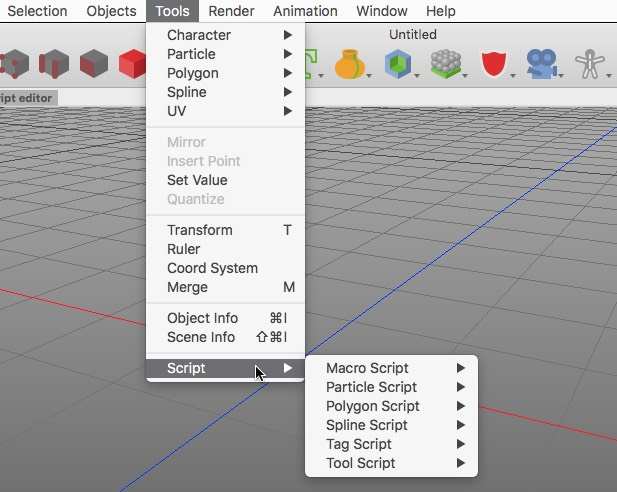
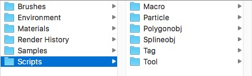

Executing a ScriptExecuting a script is as easy as calling a menu command. Just go to the "Tools->Script" menu item and select the script you want to use.  The script menu displays the scripts in the same hierarchy as they are located in the "scripts" folder at the following path ~/Library/Application Support/Cheetah3D/scripts The "scripts" folder already offers various sub-folder. To install scripts just copy them into the appropriate sub-folder and restart Cheetah3D. Your newly installed scripts should be now ready for usage.  Attention:
|